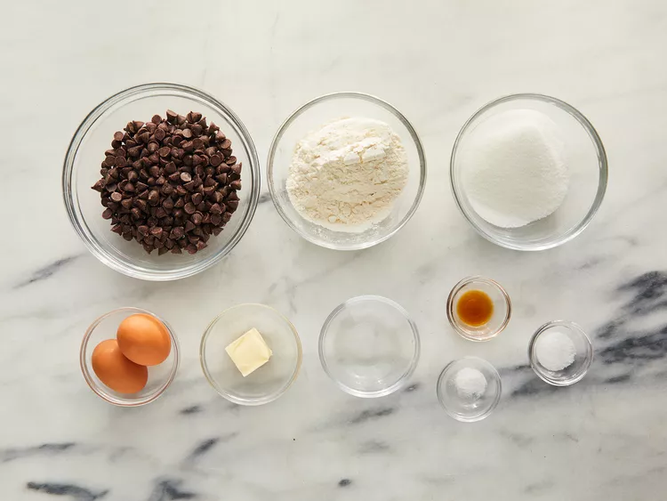
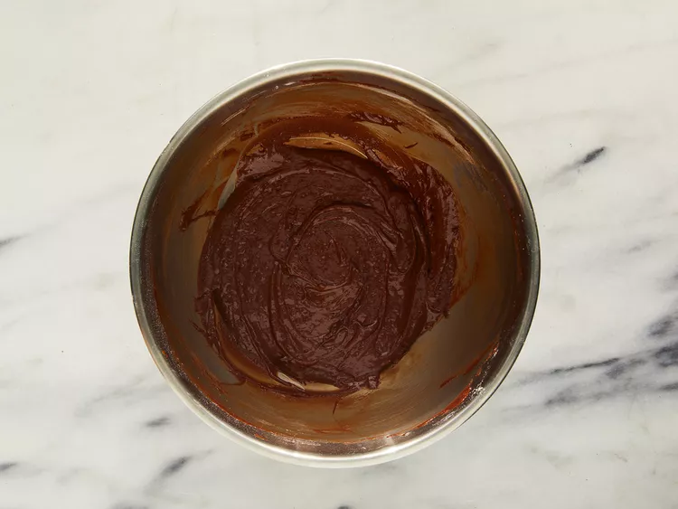

These brownies with chocolate chips are the best brownies I've ever had!
Original recipe (1X) yields 16 servings
Step 1
Gather all Ingredients
Step 2
Preheat the oven to 325 degrees F (165 degrees C). Grease an 8-inch square pan.
Step 3
Combine sugar, butter, and water in a medium saucepan; cook and stir over medium heat until boiling. Remove from heat and stir in chocolate chips until melted and smooth; mix in eggs and vanilla. Combine flour, salt, and baking soda; stir into the chocolate mixture. Spread brownie batter evenly into the prepared pan.
Step 4
Bake in the preheated oven until top is dry and edges have started to pull away from the sides of the pan, about 20 to 30 minutes.
Step 5
Let cool completely before cutting into squares.